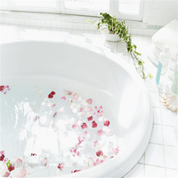

|  | 节省我们的洗澡水
用喷头洗淋浴用喷头淋浴比用浴缸洗澡节省水量达八成之多。因此建议大家多用淋浴，少用或不用盆浴。 （1）学会调节冷热水比例。 （2）洗澡时应避免过长时间冲淋，搓洗时应及时关水；不要将喷头的水自始至终地开着，更不应敞开着。 （3）尽可能先从头到脚淋湿一下，就全身涂肥皂搓洗，最后一次冲洗干净。不要单独洗头、洗上身、洗下身和脚。 （4）洗澡要专心致志，抓紧时间，不要悠然自得，或边聊边洗。更不要在浴室里和好朋友大打水仗。要记住：时间就是水！ （5）不要利用洗澡的机会“顺便”洗衣服、鞋子。 在澡盆洗澡，要注意：放水不要满，1/3-1/4盆足够用了。 盆浴后的水可一水多用，用来冲洗厕所和拖地等。
|
水资源介绍